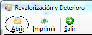
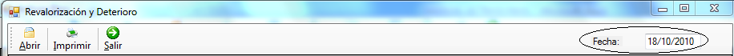
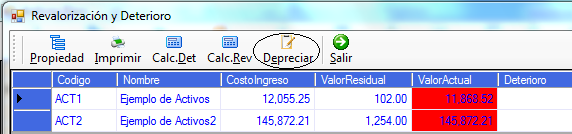
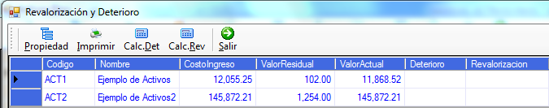
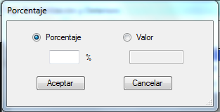

Abrir:

Figura26
Esta opción nos permite abrir los activos de una fecha determinada la misma que debe ingresarse en el cuadro de texto que se encuentra en la parte derecha de la barra (Figura27).

Figura27
Si no existe a la fecha ingresada la columna "Valor actual" aparecerá de color rojo y se activará el botón Depreciar(Figura28)

Figura28
Propiedades:

Al hacer clic en este botón se desplegará la ventana de mantenimiento de activos con los detalles del activo. Para acceder a esta opción es necesario que se seleccione el activo requerido y luego se haga clic en el botón propiedad.
Calcular Deterioro:
Esta opción nos permite calcular el deterioro de los activos para lo cual es necesario seleccionar el o los activos para los cuales se requiere realizar el cálculo. Al hacer clic en este botón se desplegará un cuadro de dialogo (Figura30) con las opciones:
· Porcentaje: al elegir esta opción se asigna al deterioro el porcentaje que el usuario ingrese del valor actual del activo
· Valor: Esta opción le permite al usuario ingresar el valor del deterioro del activo

Figura30
Calcular Revalorización:
Esta opción nos permite calcular la revalorización de los activos para lo cual es necesario seleccionar el o los activos para los cuales se requiere realizar el cálculo. Al hacer clic en este botón se desplegará un cuadro de dialogo (Figura29) con las opciones:
· Porcentaje: al elegir esta opción se asigna al deterioro el porcentaje que el usuario ingrese del valor actual del activo
· Valor: Esta opción le permite al usuario ingresar el valor del deterioro del activo